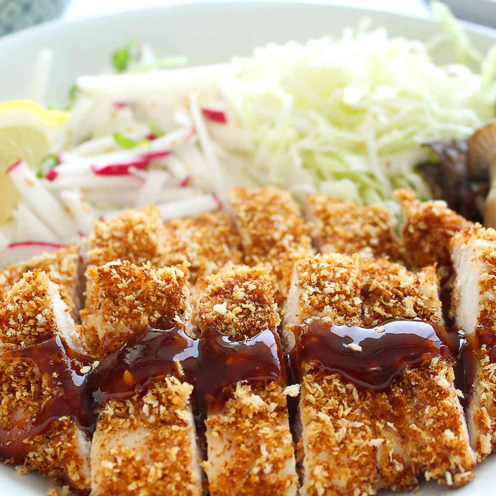

Chicken Katsu

What is Katsu?
Katsu is a Japanese dish of crispy fried cutlets coated with panko bread crumbs. Popular Varieties ar chicken katsu (which we will be talking about)and tonkatsu (which is made with pork).

How to make Katsu
Ingredients
- Chicken Breasts: Cut one breast in half to make two cutlets
- Seasonings: All you need is salt and pepper (maybe miso if you really want it)
- Flour: All purpose flour helps seal in the moisture, adds flavor and promotes browning.
- Egg: An egg adds moisture and gives the panko something to stick to.
- Panko: This creates the crunchy breading of the katsu
- Oil: High smoke point oil will do the best for this. This is how you fry the chicken
Instructions
- Cut chicken breast in half
- Put chicken breast in to a plastic bag and smash it down with a meat mallet or a pot to get an even level.
- Season the chicken to taste
- Dredge the chicken in flour
- Coat the breast in egg
- Coat the breast in panko bread crumbs
- Fry until golden brown on both sides (can be overcooked and still taste good.)
- Enjoy